Космічний корабель — покрокова інструкція
Урок 5 · Final boss. 38 кроків (відео всього корабля: ship_p.mp4, або в плеєрі уроку). Біля кожного кроку — картинка «що має вийти» і посилання на коротке відео.
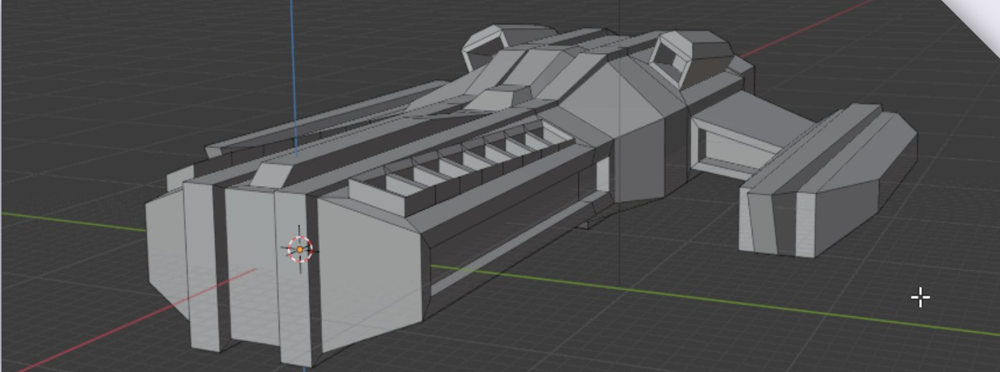
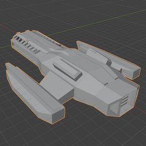
- Одна модель. Усе витягуємо з корпусу: E, I, K, Ctrl+R. Окремих кубів не додаємо (крім першого).
- Обидва боки разом. Mirror ще не вчили — виділяй ліву і праву грань (Shift+ЛКМ) і роби дію один раз.
- Числа вводь з клавіатури: E Z
0.25Enter. Вісь — X / Y / Z після команди. - Ріж там, де потрібно. Лінії ножа — лише на гранях, які ріжемо; зайві лінії потім заважають.
- Ніс корабля дивиться вздовж +X. Numpad 1 — збоку, Numpad 3 — спереду, Numpad 7 — зверху.
1Корпус кільцями
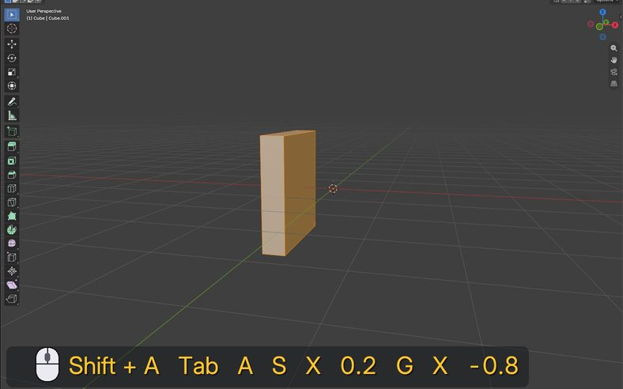
1Задній торець
Новий куб → Tab → A (виділити все) → S X 0.2 → G X -0.8. Вийшла тонка пластина — задній край корабля.
Shift+A Tab A S X 0.2 G X -0.8
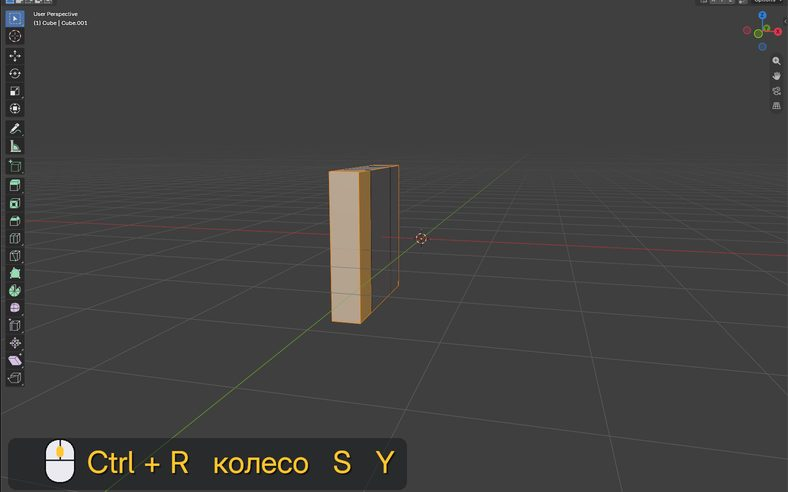
2Дві лінії вздовж
Ctrl+R, покрути колесо — 2 петлі вздовж корабля → S Y, щоб вони стали на ±0.5. Це краї верхньої і нижньої смуги.
Ctrl+R колесо S Y
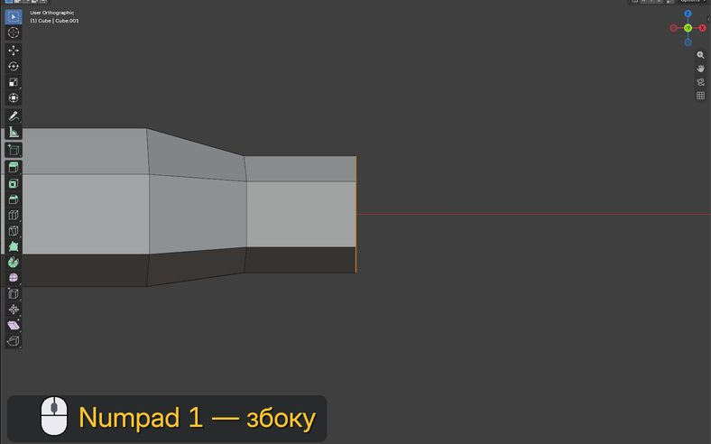
3Корпус кільцями
Виділи передню грань → E X до наступного кільця → S Y / S Z під розмір → виділи кутові вершини (боки) → S Z. Від кільця 2 ще виділи верхні вершини → G X, потім нижні → G X (таблиця). Так з'являються похилі лінії, як в оригіналі.
| Кільце | E X до | Боки: ширина / висота | Верх і низ: ширина / висота | Верх / низ G X до |
|---|---|---|---|---|
| 1 | x −0.55 | ±2.3 / ±0.56 | ±1.0 / ±1.0 | — |
| 2 | x 6.6 | ±2.3 / ±0.56 | ±1.0 / ±1.0 | верх 7.05 · низ 7.05 |
| 3 | x 8.1 | ±2.76 / ±0.72 | ±1.2 / верх 1.55, низ −1.3 | верх 9.14 · низ 8.05 |
| 4 | x 13.85 | ±2.76 / ±0.72 | ±1.2 / верх 1.55, низ −1.3 | верх 13.8 · низ 13.8 |
| 5 | x 15.6 | ±2.21 / ±0.59 | ±0.96 / ±1.05 | верх 15.55 · низ 15.55 |
| 6 (ніс) | x 17.56 | ±2.16 / ±0.59 | ±1.01 / ±1.05 | — |
«Боки» — 4 кутові вершини кільця (найдальші по Y), «верх і низ» — 4 вершини смуг. Точне число зручно вписати в панелі N → Item → Median.
E X S Y S Z G X
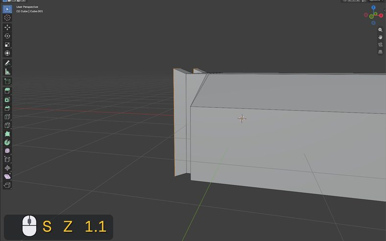
4«Вушка» ззаду
Виділи дві бічні смуги заднього торця (Shift+ЛКМ) → E X -0.25 → S Z 1.1.
Shift+ЛКМ E X -0.25 S Z 1.1
2Крила й гондоли
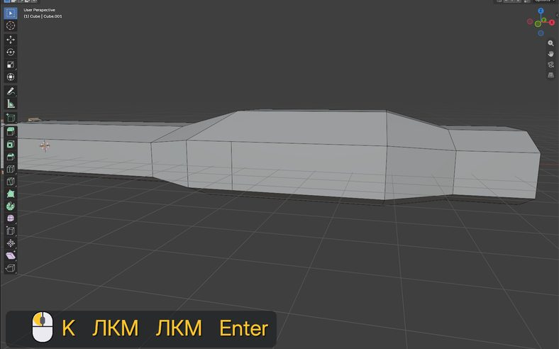
5Межа крила
K (ніж) — вертикальна лінія по бічній стінці корпусу на x 9.53. З обох боків.
K ЛКМ ЛКМ Enter
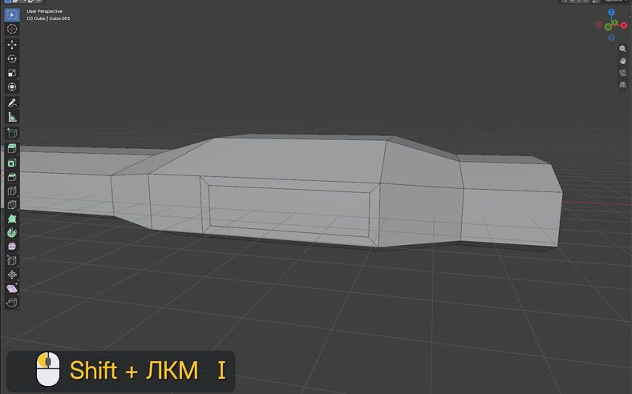
6Рамка під крило
Виділи бічні грані між лінією і кільцем 4 (обидва боки) → I 0.22.
Shift+ЛКМ I 0.22
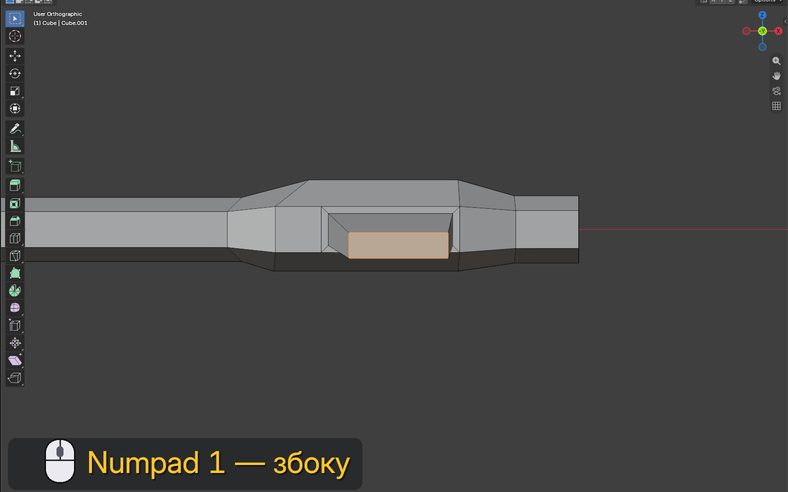
7Крило
Alt+E → Extrude Individual на 1.75 назовні → кінець крила: S X коротший (x 10.39…13.49) → S Z / G Z нижче й тонше (z −0.9…−0.1). Вийшла трапеція.
Alt+E 1.75 S X S Z G Z
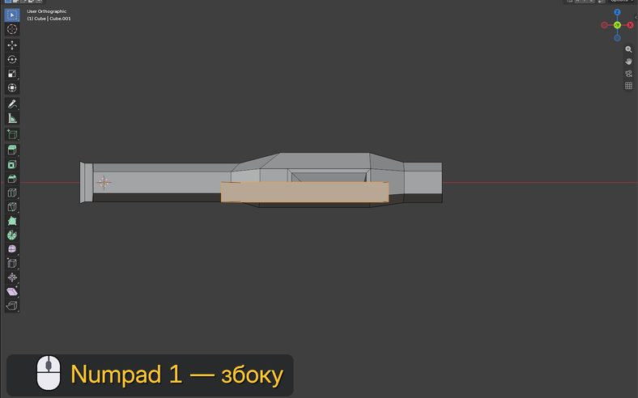
8Стінка гондоли
Кінці крил → Alt+E 0.25 → S X на всю довжину гондоли (x 6.09…14.78) → S Z / G Z (z −1.02…0.02).
Alt+E 0.25 S X S Z G Z
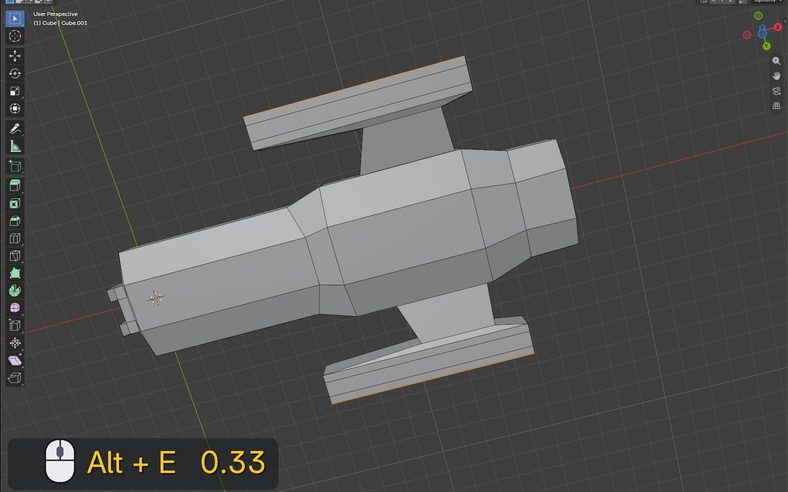
9Три смуги гондоли
Alt+E тричі: 0.33, 0.65, 0.33 — вузька, широка, вузька.
Alt+E 0.33 Alt+E 0.65 Alt+E 0.33
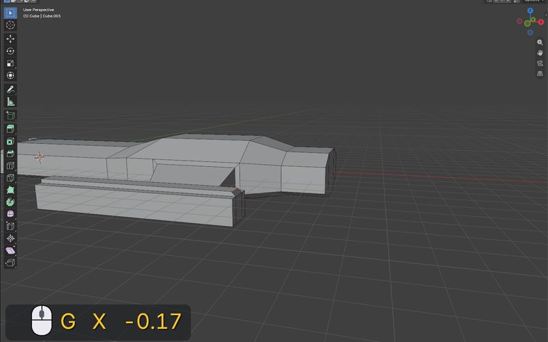
10Гребінь
Верх середньої смуги (обидва боки) → E Z 0.18 → передні вершини гребеня → G X -0.17 (скіс).
E Z 0.18 G X -0.17
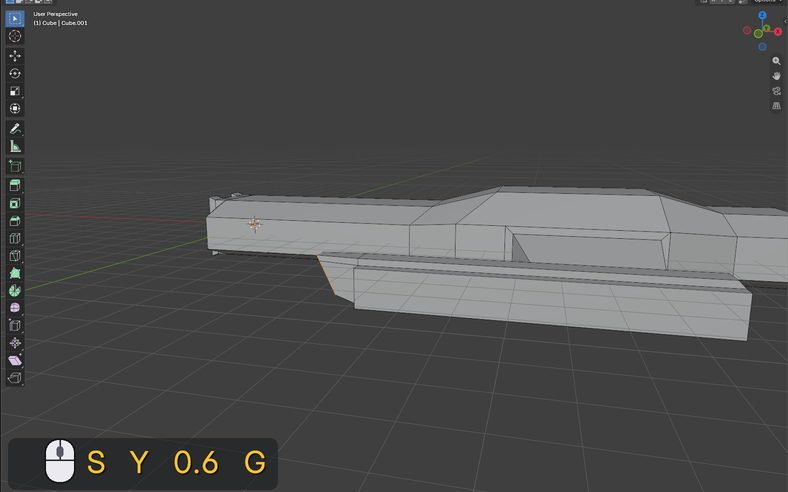
11Гострий хвіст
Задні грані середньої смуги → E X назад до x 4.92 → S Y 0.6 → нижні вершини → G до x 5.42, z −0.84.
E X S Y 0.6 G
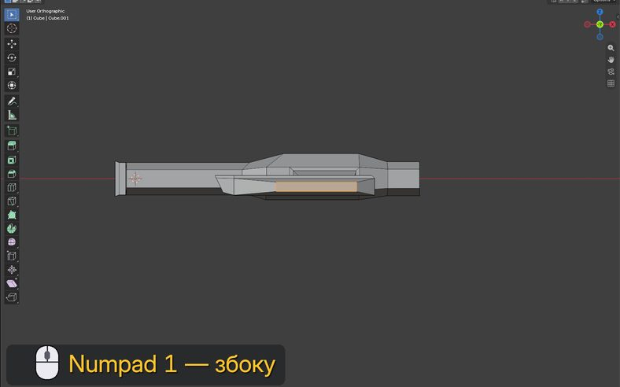
12Накладка
Зовнішні грані гондол → E 0.6 назовні → S X / S Z (x 8.7…13.68, z −0.79…−0.21) — накладка звужується.
E 0.6 S X S Z
3Кабіни
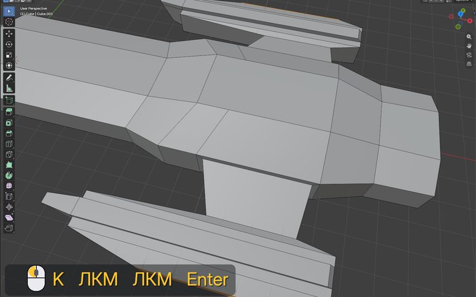
13Діагональ під кабіну
K по скосу корпусу: від краю верхньої смуги на x 10.29 до кута на x 9.53. Обидва боки.
K ЛКМ ЛКМ Enter
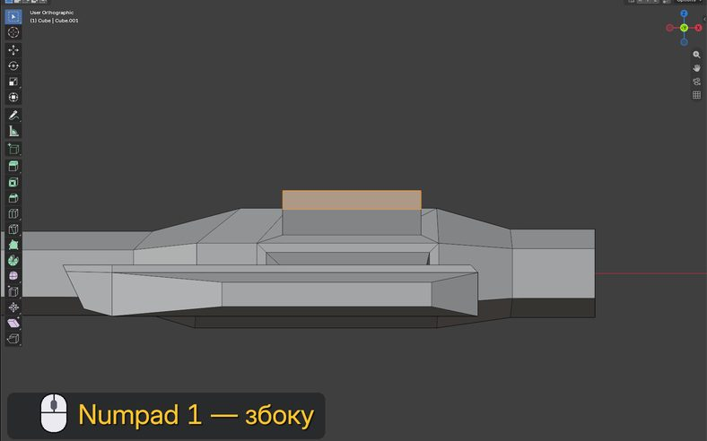
14Кабіна з корпусу
Грань скосу перед діагоналлю (обидва боки) → I 0.4 → Alt+E 0.69 → S / G під розмір (кабіна x 10.14…13.43). Кабіна — частина корпусу, не окремий куб.
I 0.4 Alt+E 0.69 S G
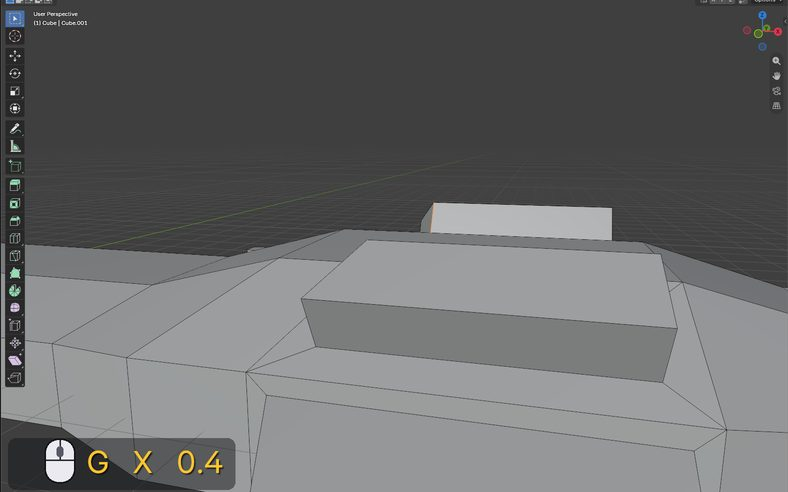
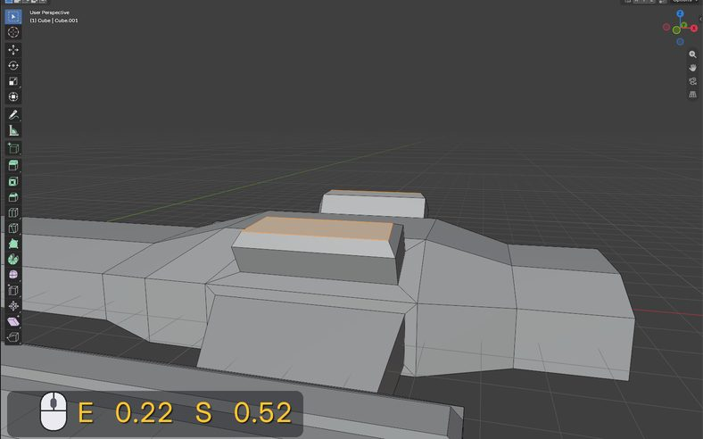
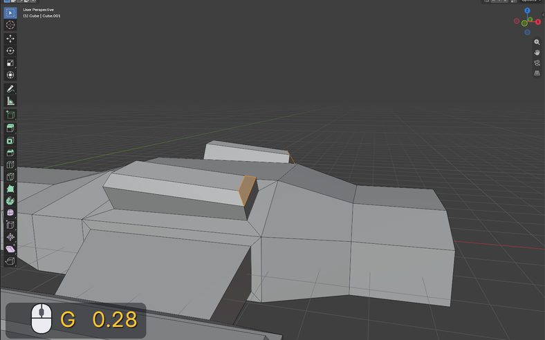
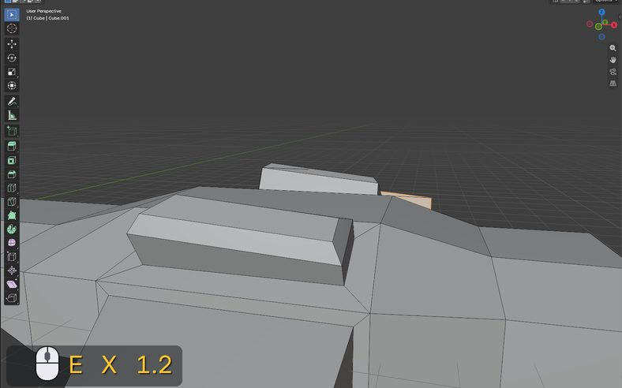
18Повітрозабірник
Задні грані кабін → I 0.08 → E X 1.2 всередину — корма порожниста.
I 0.08 E X 1.2
4Решітки й бічні панелі
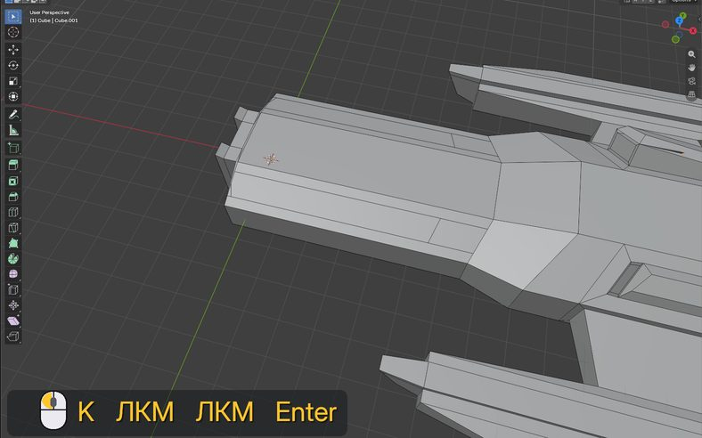
19Межі решітки
K по скосу ззаду: 2 лінії вздовж (y 1.29 і 2.01) і 2 скошені торці (від x −0.67 до −0.43, від 5.63 до 5.44). Обидва боки.
K ЛКМ ЛКМ Enter
20Лінії ребер
K: 7 ліній поперек панелі — по одній на кожне ребро, віялом. На зовнішньому краї x 0.2 · 0.98 · 1.75 · 2.53 · 3.3 · 4.08 · 4.85, на внутрішньому 0.39 · 1.12 · 1.84 · 2.56 · 3.28 · 4.0 · 4.73. Ріжемо до витягування — лінії підуть і по стінках.
K ЛКМ ЛКМ Enter
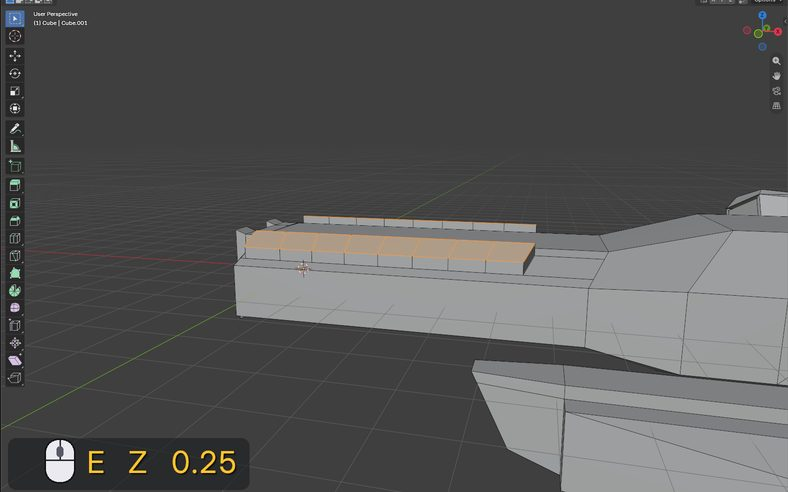
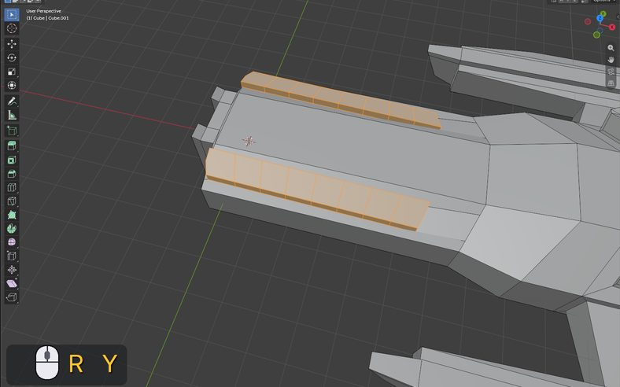
22Нахил панелі
Панелі → R Y — спереду нижче (ззаду трохи вище, на +0.05; спереду на −0.17).
R Y
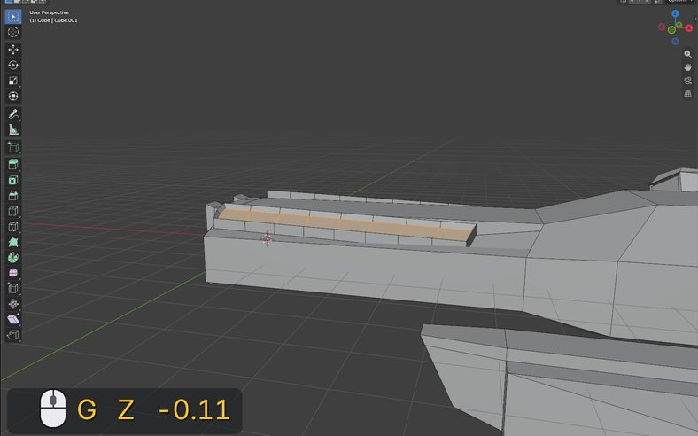
23Рамка
Верх панелей → I 0.08 → G Z -0.11 — середина нижче, рамка скошена всередину. Не E, а G — без сходинки.
I 0.08 G Z -0.11
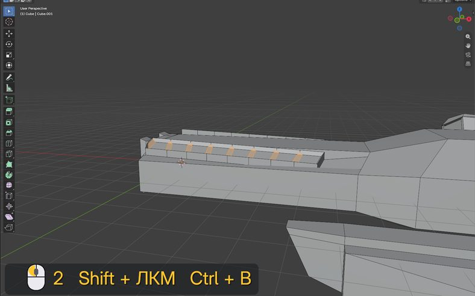
24Ребра
2 (ребра) → виділи лінії ножа всередині рамки → Ctrl+B 0.085. Кінці ребер стануть трикутниками — як на моделі.
2 Shift+ЛКМ Ctrl+B 0.085
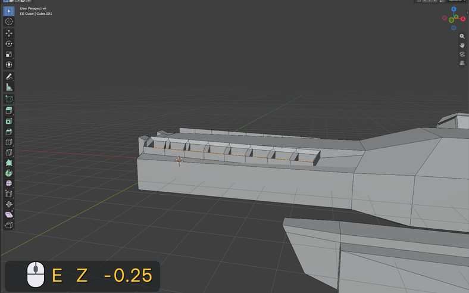
25Щілини
Широкі грані між ребрами (8 з кожного боку) → E Z -0.25.
ЛКМ Shift+ЛКМ E Z -0.25
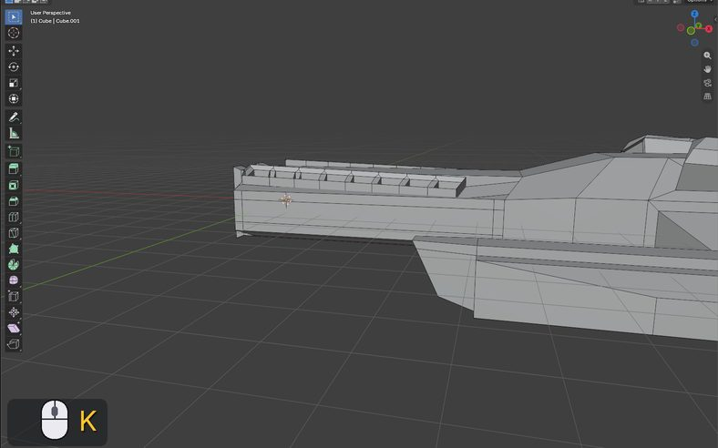
26Бічна панель
K по боковій стінці заднього корпусу — прямокутник x −0.31…6.36, z −0.31…0.31. Обидва боки.
K
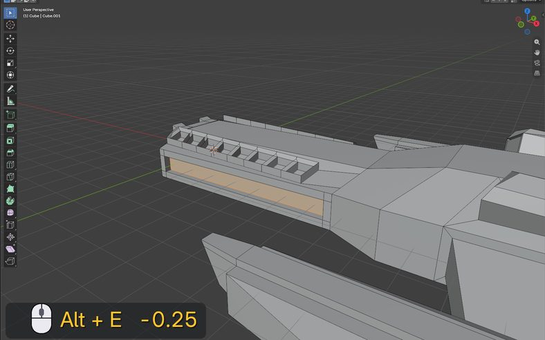
5Рейки, хребет, капот
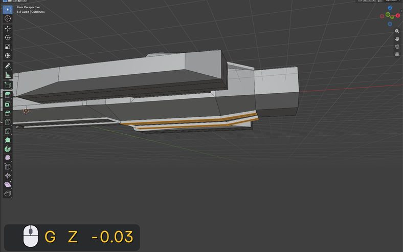
28Рейки
K вздовж верху і низу корпусу — ламана лінія: y ±0.5 ззаду, ±0.6 у середині, ±0.48 біля носа. Смуги між цією лінією і краєм — рейки: E Z 0.09 вгору (знизу -0.11), потім рейки в середині G Z ще 0.06 (знизу -0.03).
K E Z 0.09 G Z 0.06
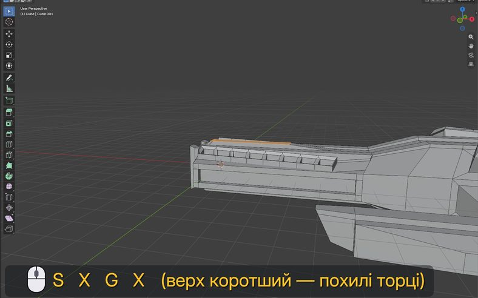
29Хребет
K по верху заднього корпусу: y ±0.27 і x −0.77 / 5.79 → середня смуга E Z 0.25 → верх S X / G X коротший (x −0.46…3.48) — похилі торці.
K E Z 0.25 S X G X
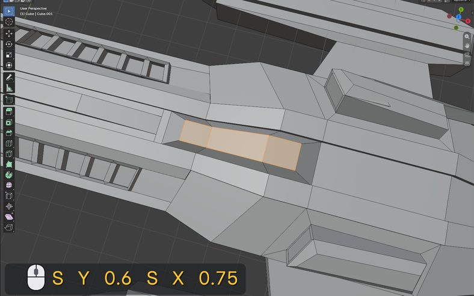
30Капот
K поперек на x 6.02 і 10.29 (через канал і рейки) → дно каналу між лініями → E Z 0.28 → S Y 0.6 → S X 0.75.
K E Z 0.28 S Y 0.6 S X 0.75
6Ніс і тунель
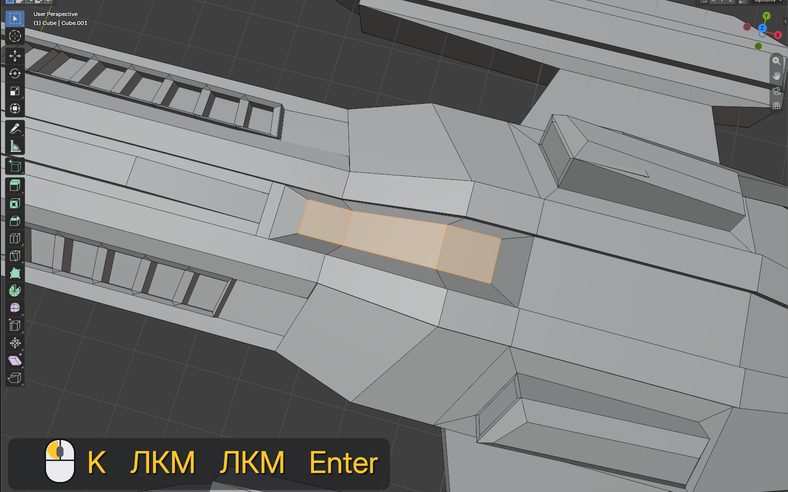
31Лінії на носі
K по торцю носа — 2 вертикальні лінії на y ±1.01: середина і дві «щоки».
K ЛКМ ЛКМ Enter
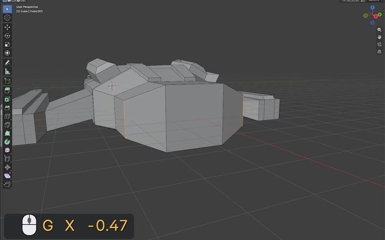
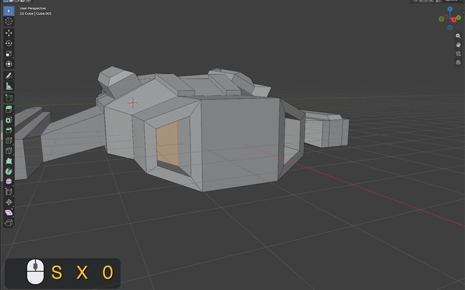
33Ніші в щоках
Щоки (обидва боки) → I 0.25 → E всередину → S X 0 — рівне дно ніші (x 16.32).
I 0.25 E S X 0
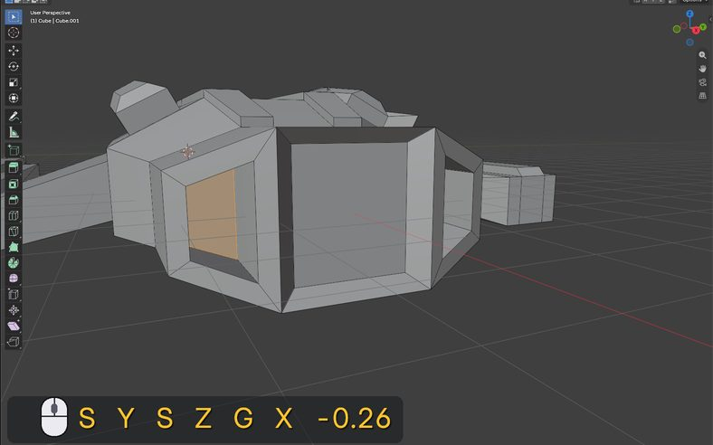
34Рамка отвору
Середня грань торця → I 0.2 → S Y / S Z (отвір 0.77 × 0.86) → G X -0.26.
I 0.2 S Y S Z G X -0.26
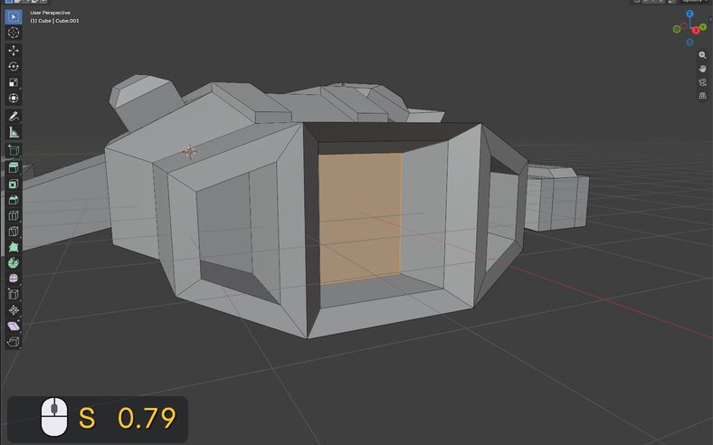
35Тунель
E X всередину до x 16.55 → S 0.79: тунель звужується вглиб, але низ лишається рівним — опусти лише верхні вершини.
E X S 0.79
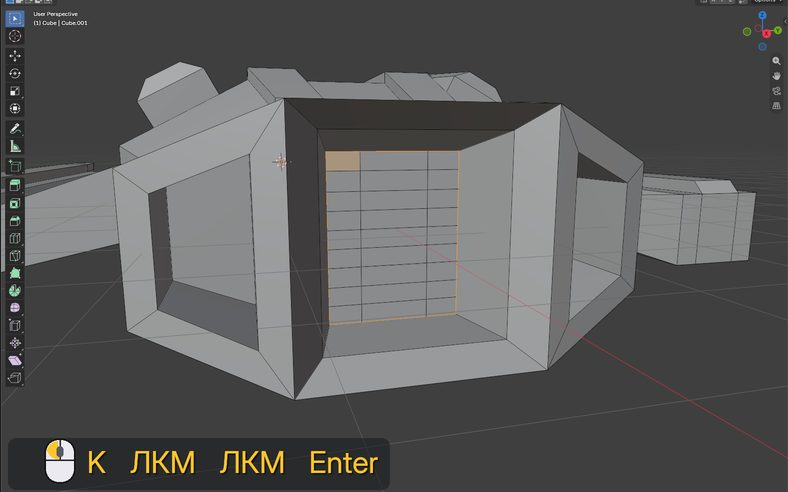
36Лінії планок
K по задній стінці тунелю: горизонтальні лінії z −0.69 · −0.52 · −0.34 · −0.17 · 0 · 0.17 · 0.34 · 0.52 і вертикальні y ±0.31, ±0.61.
K ЛКМ ЛКМ Enter
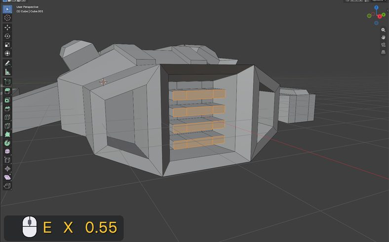
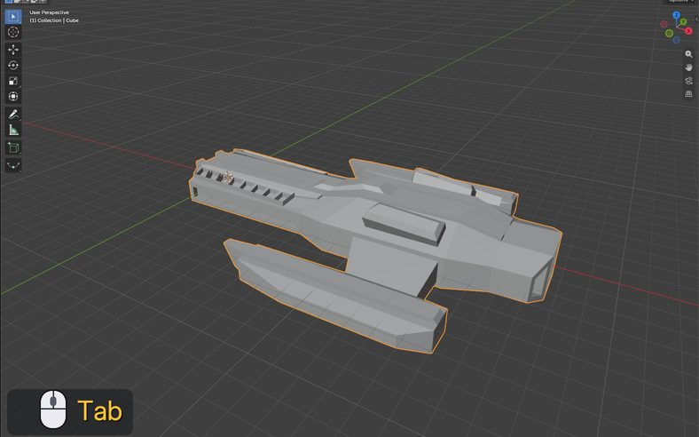
38Готово!
Tab — вийди з режиму редагування, покрути вид і збережи: Ctrl+S → spaceship.blend.
Tab Ctrl+S